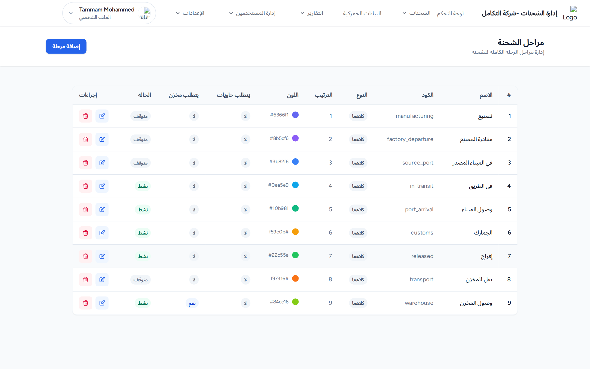
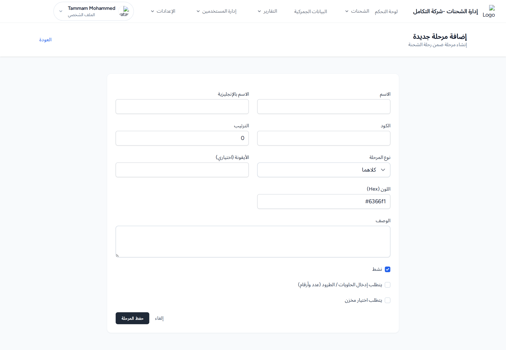
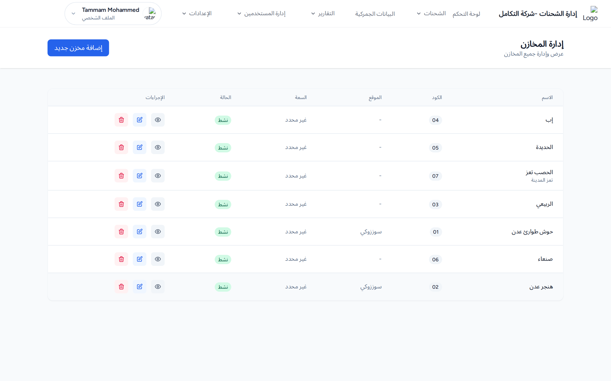

النمط الموحّد
كل عنصر في «الإعدادات» يتبع نمطاً واحداً: صفحة قائمة + زر إضافة + نموذج إضافة/تعديل + أيقونات تعديل وحذف، ورسائل نجاح بصيغة «تم إضافة/تحديث/حذف … بنجاح».

مثال — صفحة «مراحل الشحن»: جدول العناصر وأزرار الإضافة والتعديل والحذف.
العناصر وحقولها الرئيسية
- الخطوط الملاحية: الاسم *، نوع الخط (بحري/جوي/بري) *، اسم الشركة، الكود التعريفي، الوقت المتوقع (أيام)، الهاتف، البريد.
- المنافذ الجمركية: الاسم *، الكود التعريفي، النوع، المدينة، الدولة.
- مجموعات الشحن: الاسم *، رقم المجموعة.
- الشركات: الاسم *، اللوجو (صورة حتى 2م.ب).
- الأقسام: الاسم *.
- أنواع الشحنات / حالات الشحنات: الاسم *.
- المستندات: اسم المستند *، مفعّل (خانة اختيار). المستندات المفعّلة فقط تظهر كخيارات مرفقات في نماذج الشحنات.
- مراحل الشحن: الاسم *، الاسم بالإنجليزية، الكود *، الترتيب *، الأيقونة، اللون، الوصف، نوع المرحلة (كلاهما/بحري/بري) *، نشط، يتطلب إدخال الحاويات، يتطلب اختيار مخزن.
- المخازن: اسم المخزن *، كود المخزن *، الموقع، العنوان، السعة، نشط، ملاحظات.

نموذج «إضافة مرحلة شحن»: حقول «الكود» و«الترتيب» و«نوع المرحلة» وخانتا «يتطلب إدخال الحاويات» و«يتطلب اختيار مخزن».
لماذا تهمّ مراحل الشحن؟ خانتا «يتطلب الحاويات» و«يتطلب مخزن» هما ما يجعل نموذج التتبّع يطلب تلقائياً أرقام الحاويات أو اختيار مخزن عند تلك المرحلة، و«نوع المرحلة» يحدّد أيّها يظهر للبحري وأيّها للبري.

صفحة «المخازن»: قائمة المخازن مع الكود والحالة.
المخرجات المتوقعة: بعد الحفظ تظهر رسالة نجاح مناسبة وتُعاد إلى قائمة العنصر.
إعدادات النظام والنسخ الاحتياطي
صفحة «إعدادات النظام» (لمستخدمي النظام فقط، من قائمة المستخدم أعلى اليسار) تتيح ضبط: اسم النظام، شعار النظام، ايميلات النسخ الاحتياطي، السنة المالية (من — إلى)، واستعادة نسخة قاعدة البيانات.
تنبيه: يُفضَّل أخذ نسخة احتياطية حالية قبل استعادة أي نسخة، لأن الاستعادة تستبدل البيانات الحالية.